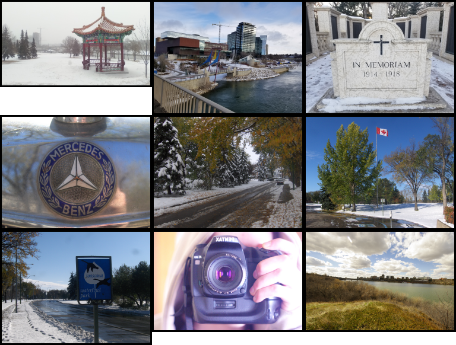
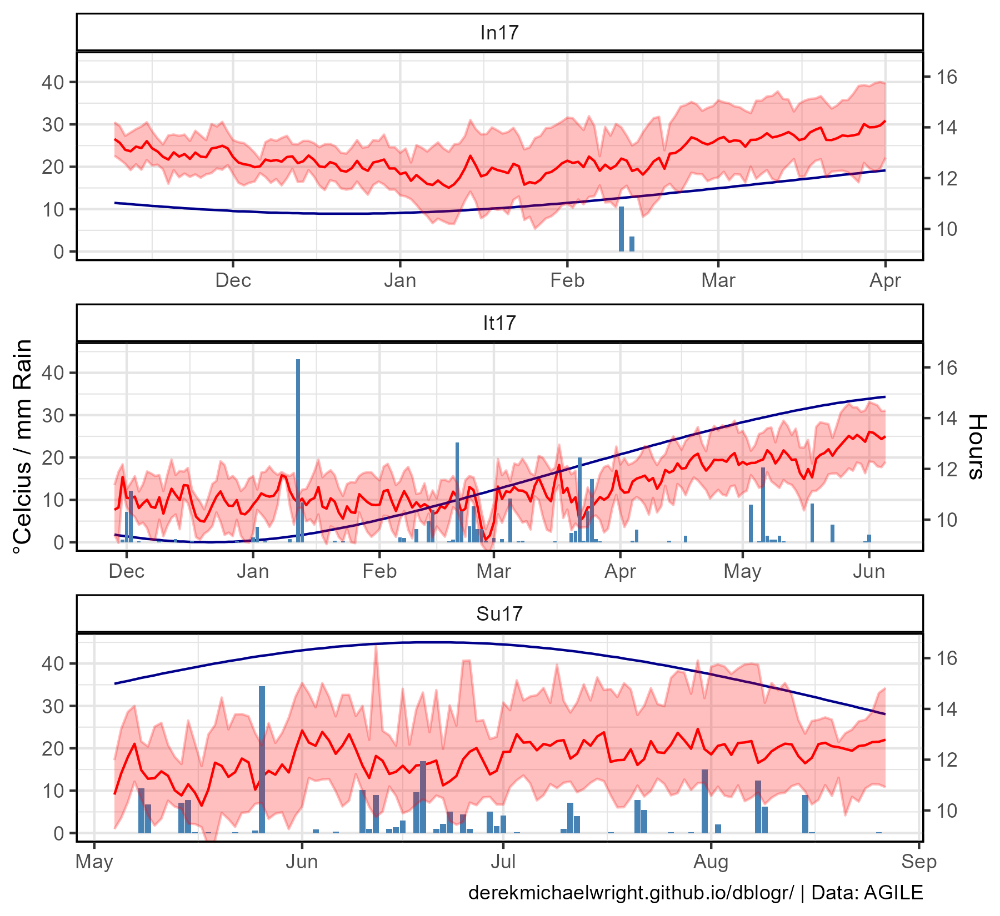
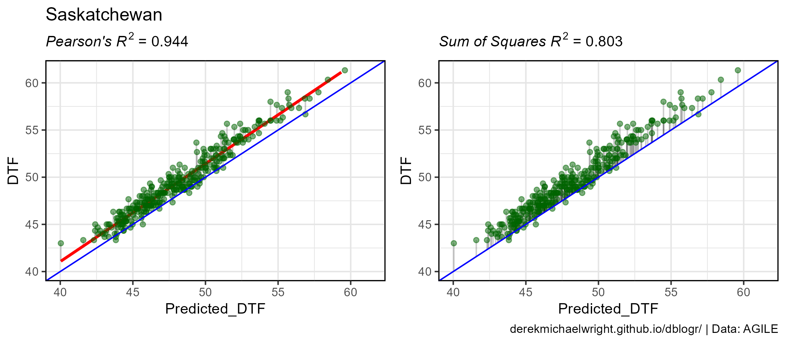
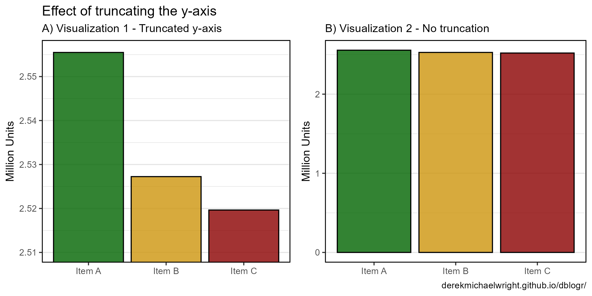
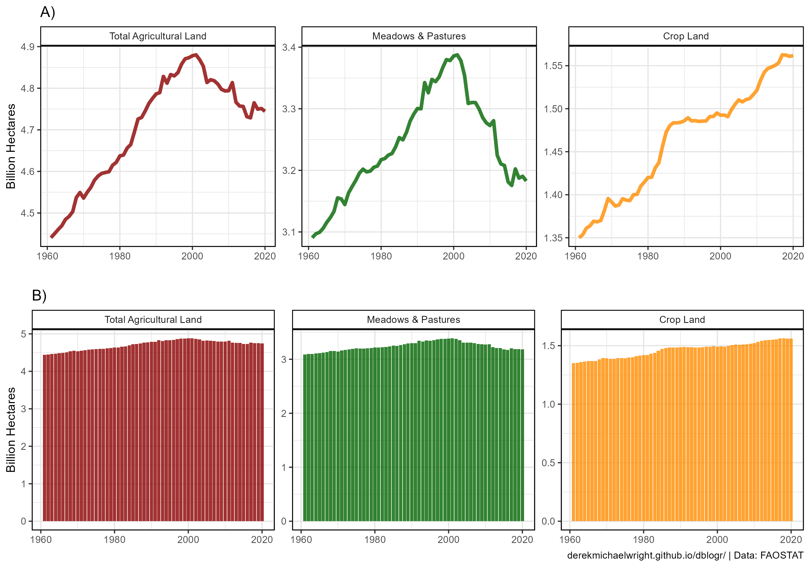
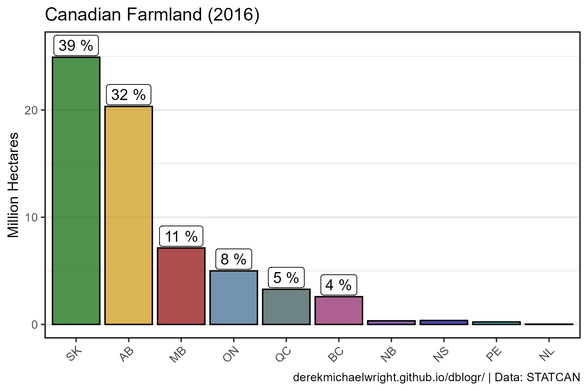
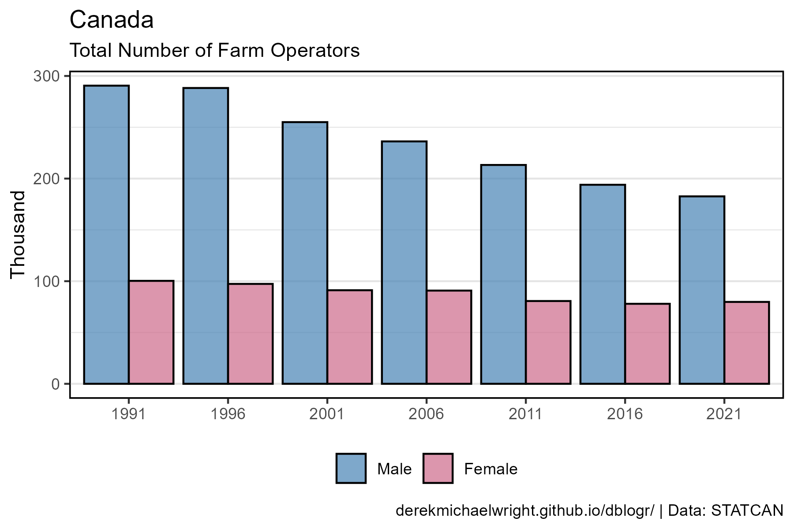
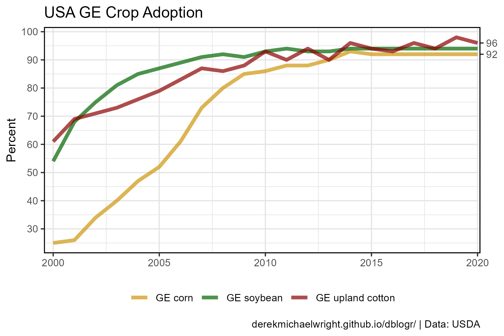
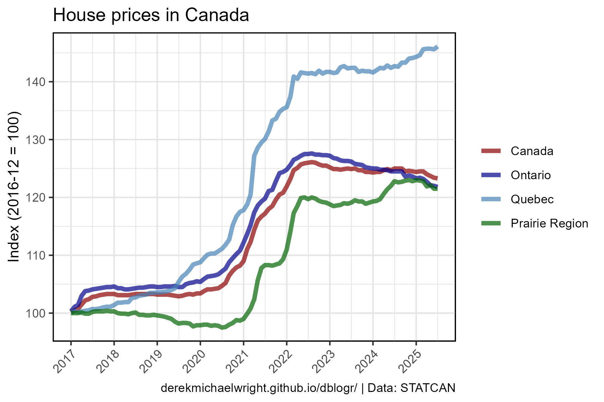
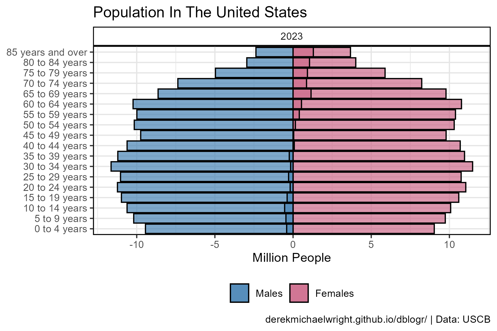

www.dblogr.com/
Welcome to the personal website for Derek Michael Wright
www.dblogr.com/ or derekmichaelwright.github.io/dblogr
About Me
My Curriculum Vitae (CV)
Socials
Professional Email
Personal Email
Derek Michael Wright
I was born in Regina, Saskatchewan and graduated with a BSc in Biology from the University of Regina in 2012, followed by a MSc in Agrobiotechnology from Justus-Liebig-Universität Gießen (University of Giessen, Germany) in 2015. I now work in the Plant Sciences department at the University of Saskatchewan and have been involved in three research projects (AGILE, EVOLVES, P2IRC & ACTIVATE) with lentil (Lens culinaris).

Photography
Albums
Under Construction…
AGILE
General
Some of my photography work
Mountains
Saskatchewan
Publications
Publications:
- (2022) Focusing the GWAS Lens on days to flower using latent variable phenotypes derived from global multi-environment trials. The Plant Genome. e20269. doi.org/10.1002/tpg2.20269
- (2021) Strategic Identification of New Genetic Diversity to Expand Lentil (Lens culinaris Medik.) Production (Using Nepal as an Example). Agronomy. 11(10): 1933. doi.org/10.3390/agronomy11101933
- (2021) Understanding photothermal interactions can help expand production range and increase genetic diversity of lentil (Lens culinaris Medik.). Plants, People, Planet. 3(2): 171-181. doi.org/10.1002/ppp3.10158
- (2020) Genomic selection for lentil breeding: Empirical evidence. The Plant Genome. 13(e20002): 1-15. doi.org/10.1002/tpg2.20002
- (2015) Influence of heterozygosity on nitrogen use efficiency in hybrid and purebred lines of Brassica napus (L.). University of Giessen. MSc. Thesis.
All Publications
Scientific publications I have been involved in while working/studying at University of Regina, Justus-Liebig-Universität Gießen (University of Giessen) & the University of Saskatchewan.
LDP Phenology
Understanding photothermal interactions can help expand production range and increase genetic diversity of lentil (Lens culinaris Medik.). Plants, People, Planet. (2021) 3(2): 171-181. doi.org/10.1002/ppp3.10158
Derek M. Wright, Sandesh Neupane, Taryn Heidecker, Teketel A. Haile, Crystal Chan, Clarice J. Coyne, Rebecca J. McGee, Sripada Udupa, Fatima Henkrar, Eleonora Barilli, Diego Rubiales, Tania Gioia, Giuseppina Logozzo, Stefania Marzario, Reena Mehra, Ashutosh Sarker, Rajeev Dhakal, Babul Anwar, Debashish Sarker, Albert Vandenberg & Kirstin E. Bett.

LDP Nepal Phenology
Strategic Identification of New Genetic Diversity to Expand Lentil (Lens culinaris Medik.) Production (Using Nepal as an Example). Agronomy. (2021) 11(10): 1933. doi.org/10.3390/agronomy11101933
Sandesh Neupane, Rajeev Dhakal, Derek M. Wright, Deny K. Shrestha, Bishnu Dhakal & Kirstin E. Bett .

LDP GWAS Phenology
Focusing the GWAS Lens on days to flower using latent variable phenotypes derived from global multi-environment trials. The Plant Genome. (2022) 16(1): e20269. doi.org/10.1002/tpg2.20269
Sandesh Neupane, Derek M. Wright, Raul O. Martinez, Jakob Butler, Jim L. Weller, Kirstin E. Bett.
LDP GWAS UAV
Disecting lentil crop growth across multi-environment trials using unoccupied aerial vehicles and genome-wide association studies. unpublished.
Derek M Wright, Sandesh Neupane, Tania Gioia, Steve Shirtlife & Kirstin E Bett.

LDP GWAS Protein
[Evaluating the breeding potential of cultivated lentils for protein and amino acid concentration and quality]
Jiayi Hang, Derek M. Wright, Kirstin E. Bett & James D. House
A follow up to:
Prediction of protein and amino acid contents in whole and ground lentils using near-infrared reflectance spectroscopy. LWT. (2022) 165: 113669. doi.org/10.1016/j.lwt.2022.113669
Jiayi Hang, Da Shi, Jason Neufeld, Kirstin E. Bett & James D. House

Genomic Selection in Lentil
Genomic selection for lentil breeding: Empirical evidence. The Plant Genome. (2020) 13(e20002): 1-15. doi.org/10.1002/tpg2.20002
Teketel A. Haile, Taryn Heidecker, Derek M. Wright, Sandesh Neupane, Larissa Ramsay, Albert Vandenberg & Kirstin E. Bett.

Lentil Flavones
Mass Spectrometry-Based Untargeted Metabolomics Reveals the Importance of Glycosylated Flavones in Patterned Lentil Seed Coats. Journal of Agricultural and Food Chemistry. (2023) 71(7): 3541–3549. doi.org/10.1021/acs.jafc.2c07844
Fatma M. Elessawy, Derek M. Wright, Albert Vandenberg, Anas El-Aneed & Randy W. Purves.

Algae Grazers
Grazing preferences of three species of amoebae on cyanobacteria and green algae. The Journal of Eukaryotic Microbiology. (2024) e13018: 1-14. doi.org/10.1111/jeu.13018
Harold G. Weger, April K. Polasek, Derek M. Wright, Arun Damodaran, John Stavrinides
NEU in Canola
Influence of heterozygosity on nitrogen use efficiency in hybrid and purebred lines of Brassica napus (L.). University of Giessen. (2015) MSc. Thesis.
Derek M. Wright.

News Articles
Academic Work
Tutorials
Tutorials in on how to perform various statistical and genetic analyses.
GWAS Tutorial
An R tutorial on running genome-wide association studies (GWAS) with GAPIT and gwaspr

QTL Tutorial

PCA Tutorial

Augmented Designs
An R tutorial on augmented field trial designs and how to adjust their values
Note: Under Construction

Dual Y-axis

Thermal Time
Calculating Thermal Time/Growing Degree Days
An R tutorial on how to calculate thermal time and incorporate environmental data into a phenotype

Environmental Data
An R tutorial on how to manipulate and plot environmental data
R Tutorial
An introduction to R

Vignettes
Vignettes related to my work academic work and general science communication.
Lentil Diversity Panel
A population representing global genetic diversity in cultivated lentil varieties

Correlation Coefficients and Predictive Models
Correlation Coefficients and Predictive Models
A vignette on how to properly use correlation coefficients when evaluating predictive models
Data Visualizations

Misleading Graphs
A vignette illustrating how to mislead with statistics and graphs
Packages
agData
An Package Containing Agricultural Data Sets
Install:
devtools::install_github("derekmichaelwright/agData")
Documentation:
FAOSTAT
Maps of Global Crop Production

Global Farmland
Graphs of global agricultural land use with FAO data
Global Food Security

Lentil

Wheat


STATCAN
Saskatchewan Crop Production

Lentil Saskatchewan

Wheat Canada

Honeybee Canada

Canadian Farmland
Graphs about Canadian farmland using STATCAN data
Canadian Farmers
Graphs on Canadian farm operator demographics using STATCAN data
Maps of Canadian Crop Production

Other Sources
USDA, ISAAA, etc.
Maize USA

Sugarbeet USA

GE Crops

GE Crops USA
Genetically Engineered Crop Production in USA
Graphs of GE crop production using USDA data
gwaspr
An
package for plotting GWAS results from the GAPIT
package
devtools::install_github("derekmichaelwright/gwaspr")
cypher
cypher: an
package for coding and decoding secret messages
devtools::install_github("derekmichaelwright/cypher")
Blog
Random data visualizations and general blog posts.
Economics
Global Energy Use and Poverty
Graphs of global energy use, electricity use, CO2 emissions, GDP, and poverty using data from Our World in Data and IEA

Canada Fossil Fuels
Canadian Fossil Fuel Production and Import
Graphs of crude oil, natural gas, and coal production, import and export using STATCAN data

Canada Housing
Graphs of housing data in Canada using STATCAN data
Canada Public Private
Public vs Private Sector Employment in Canada
Graphs of public vs private sector employment in Canada using STATCAN data

Canada Trade
Canadian Trade - Imports and Exports
Graphs of trade surplus/deficits with other countries using STATCAN data

gapminder
Graphs with gapminder data

Demographics
Canada Population

Canada Migration

Saskatchewan Election

USA Population
Graphs of population demographics in USA using Census Bureau data
Canada Overdoses

USA Overdoses

Saskatchewan Suicides

Canada Deaths

USA Deaths

Other Stuff, etc.
Hex Stickers
Creation of hex stickers with R

Street Maps

starBliss

Blank Pages
Blank pages for notebook creation
Memorable Quotes
“We shall go into the pyre—we shall burn. But we shall not retreat from our convictions.”
“All thoughts of rest must be forsaken. Sustained efforts are necessary to complete the revolution in agriculture”
-Nikolai Vavilov“Extraordinary claims require extraordinary evidence.”
-Carl Sagan“That which can be asserted without evidence, can be dismissed without evidence.”
-Christopher Hitchens“I would rather have questions that can’t be answered than answers that can’t be questioned.”
-Richard Feynman“Think For Yourself, Question Authority”
-Timothy Leary“Whoever controls the people’s fears becomes master of their souls.”
-Niccolò Machiavelli“All animals are equal, but some animals are more equal than others”
-George Orwell“It’s amazing how much panic one honest man can spread among a multitude of hypocrites.”
-Thomas Sowell“In questions of science, the authority of a thousand is not worth the humble reasoning of a single individual.”
-Galileo Galilei“Comedy is surprises, so if you’re inteding to make somebody laugh and they don’t laugh, that’s funny.”
-Norm MacDonald“Karl Marx was right, socialism works, it is just that he had the wrong species”
-Edward O. Wilson“Growing up, I was free in my childhood years. And now they tell me I can wash away my tears. These tears explain the way, it’s the way that I feel, because the freedom they give me ain’t real.
I want freedom, the kind that they promised me, just for livin’ in this country. I want the freedom, the kind that makes me feel strong, but, let me tell you, something is wrong.”
-Grand Funk Railroad“Following our will and wind, we may just go where no one’s been. We’ll ride the spiral till the end and may just go where no one’s been.”
-ToolRoy’s Creedo

I do not choose to be a common man. It is my right to be uncommon… if I can.
I seek opportunity… not security. I do not wish to be a kept citizen, humbled and dulled by having the state look after me. I want to take the calculated risk; to dream and to build, to fail and to succeed.
I refuse to barter incentive for dole. I prefer the challenges of life to the guaranteed existence; the thrill of fulfillment to the state of calm Utopia.
I will not trade freedom for beneficence nor my dignity for a handout.
I will never cower before any master nor bend to any threat. It is my heritage to stand erect, proud and unafraid; to think and act for myself; enjoy the benefits of my creations and to face the world bodly and say, “This I have done.”
-Roy R. Wright